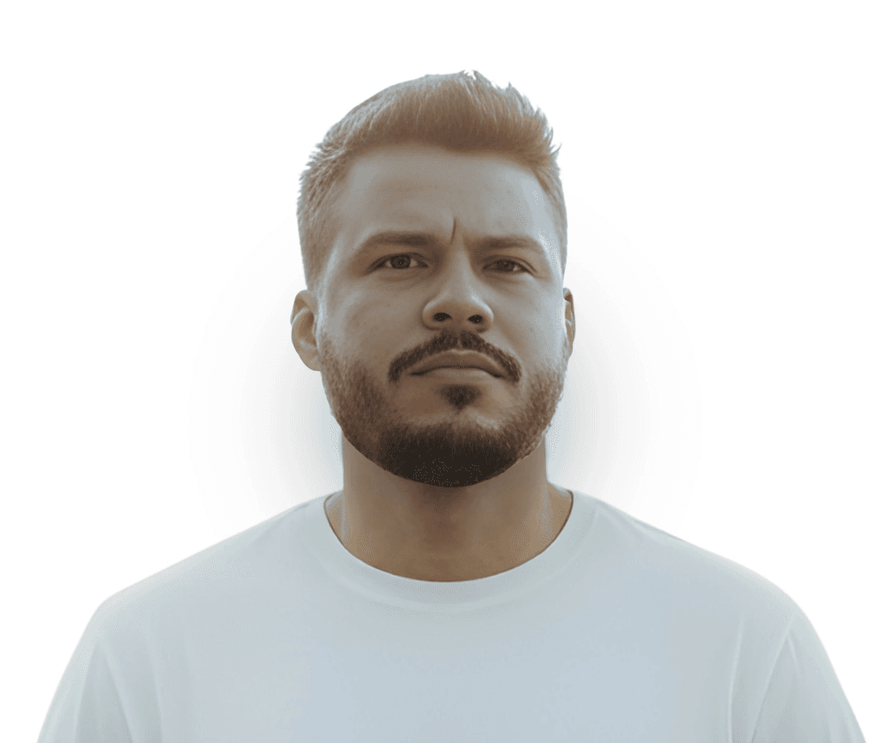

Structuring Design Tokens for multi-brand
How to organize token layers (global → semantic → component) to support theming without duplication.
DESIGN SYSTEMS · PRODUCT INFRASTRUCTURE
Specialist in scalability, component architecture, documentation and AI-assisted workflows.

Scalable architecture of tokens, components and patterns. Governance and documentation for distributed teams.
Library structuring, variants, naming conventions and workflows for design operations at scale.
Documentation, handoff, operational efficiency. Processes that reduce friction between design and engineering.
AI exploration to accelerate documentation, structural reasoning and Design System operations.
Strategic redesign of the student experience at YDUQS. First delivery using Lift 2.0 in production.
Read case →Infrastructure that unified IBMEC, Estácio and other brands. Zero duplication across teams.
Read case →Mobile-first experience that enabled practical nursing education in distance learning.
Read case →Product that centralized educational content production and increased productivity by 2.5x.
Read case →I built Lift 2.0 — a multi-brand Design System that unified IBMEC, Estácio and other brands into a single language. Dozens of designers and developers use the system daily.
Full brand swap without changing a single component. Clear governance. Living documentation.
Read full case →Structural reasoning, technical decisions and process fragments — without exposing confidential projects.
How to organize token layers (global → semantic → component) to support theming without duplication.
When to create variants vs. separate components. Criteria for component API decisions.
Naming conventions, page structure and versioning strategies for large teams.
Documentation automation, spec generation and LLM integration in the design-to-dev flow.
How tokens, living documentation and automation eliminate the need for manual handoff.
Contribution models, component review and adoption metrics that work in practice.
Beyond my work in digital products and Design Systems, I take on focused engagements in Figma structuring, componentization, documentation and AI-assisted workflows.
File structuring, libraries and conventions for teams that need to scale without losing control.
Diagnosis of inconsistencies, coverage gaps and consolidation opportunities in existing systems.
Structure definition, variants, properties and hierarchy for scalable libraries.
Technical documentation, usage guidelines, contribution standards and processes for distributed teams.
Integration of ChatGPT, Kiro and Figma AI to optimize documentation, specs and design operations.
10+ years building products that scale. At YDUQS, I lead Design Systems, internal tools and educational platforms for IBMEC, Estácio and other brands.
Design Systems, product infrastructure and scalable workflows.
📍 Rio de Janeiro, Brazil